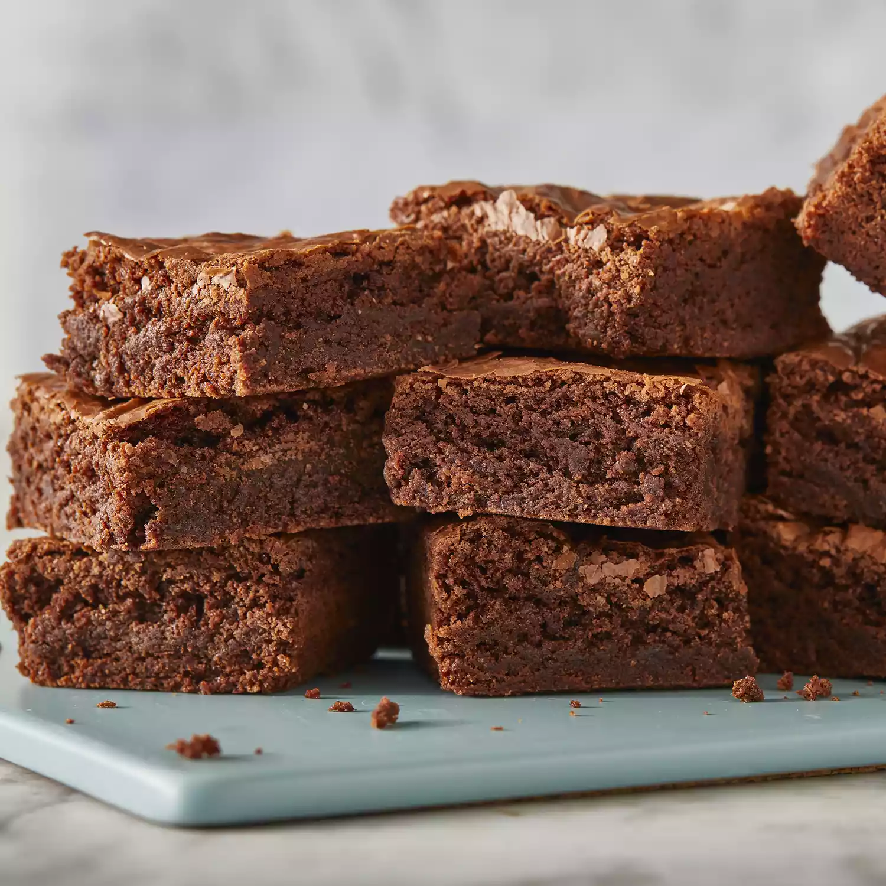

Brownies

Description
These brownies with chocolate chips are the best brownies I've ever had!
Ingredients
-
Meat: 2 ½ pounds boneless beef chuck roast, cut into 2-inch cubes
- Sugar: ½ cup white sugar
- Butter: 2 tablespoons butter
- Water: 2 tablespoons water
- Chocolate chips: 1 ½ cups semisweet chocolate chips
- Eggs: 2 large eggs, beatent
- Vanilla extract: ½ teaspoon vanilla extract
- Flour: ⅔ cup all-purpose flour
- Salt: ½ teaspoon salt
- Baking soda: ¼ teaspoon baking soda
Steps
-
Preheat the oven to 325 degrees F (165 degrees C). Grease an 8-inch square
pan.
-
Combine sugar, butter, and water in a medium saucepan; cook and stir over
medium heat until boiling. Remove from heat and stir in chocolate chips
until melted and smooth; mix in eggs and vanilla. Combine flour, salt, and
baking soda; stir into the chocolate mixture. Spread brownie batter evenly
into the prepared pan.
-
Bake in the preheated oven until top is dry and edges have started to pull away from the sides of the pan, about 20 to 30 minutes. Let cool completely before cutting into squares.